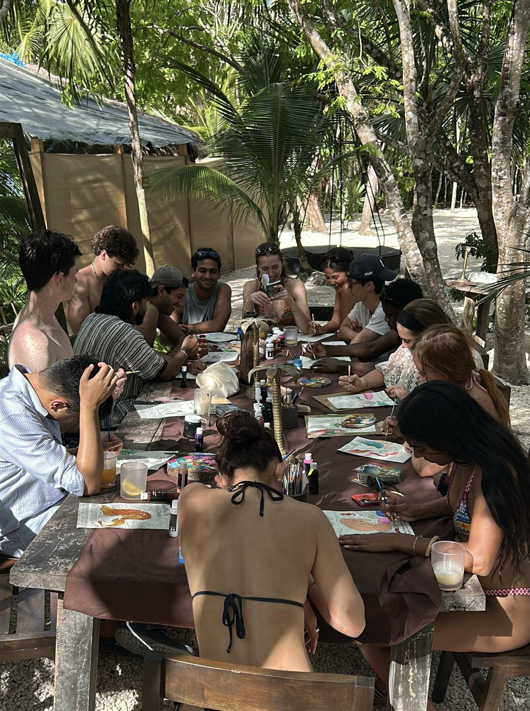
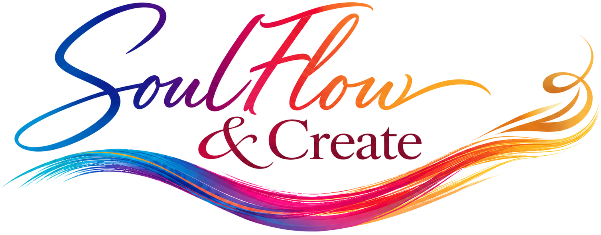
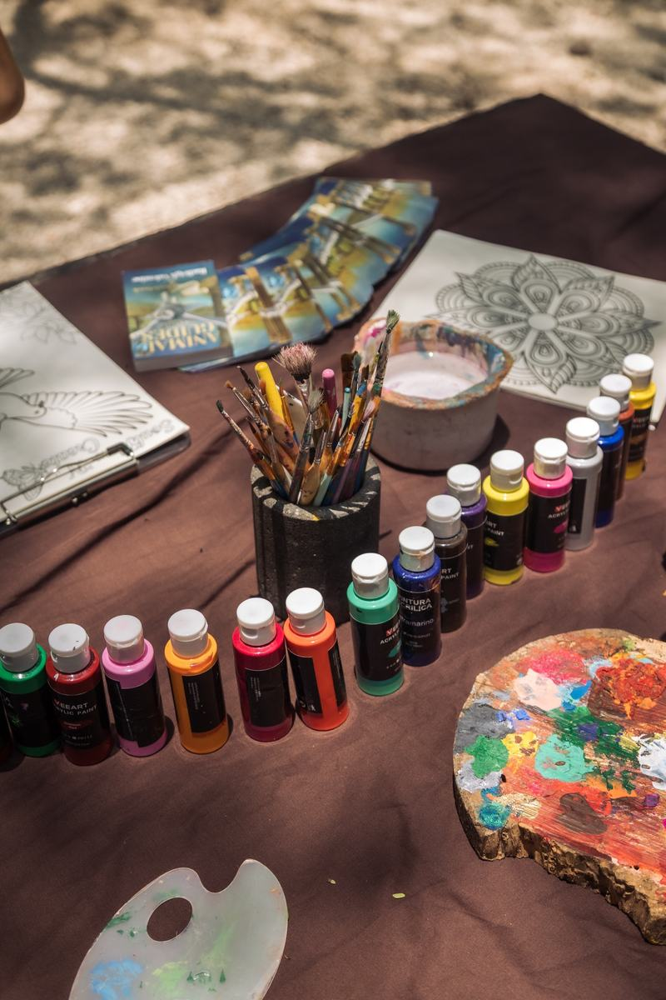
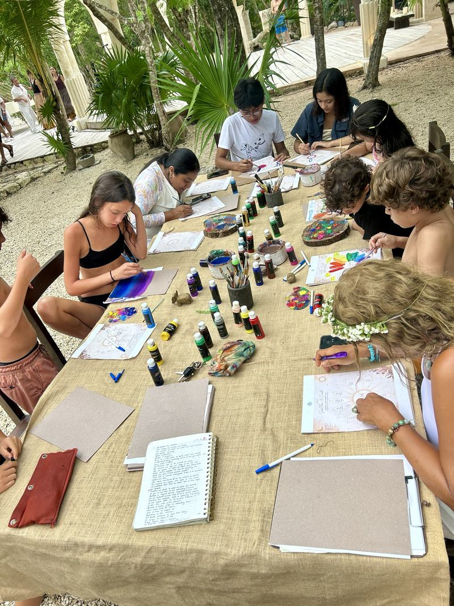
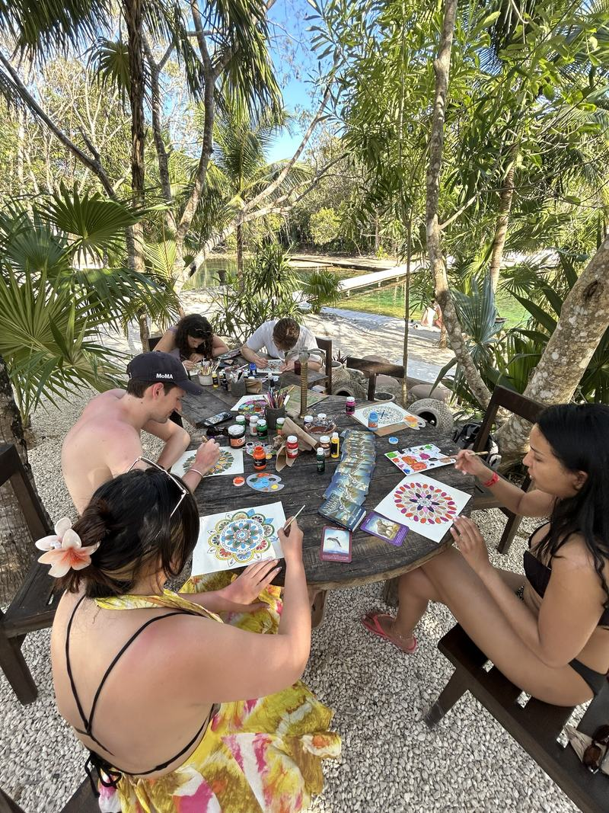
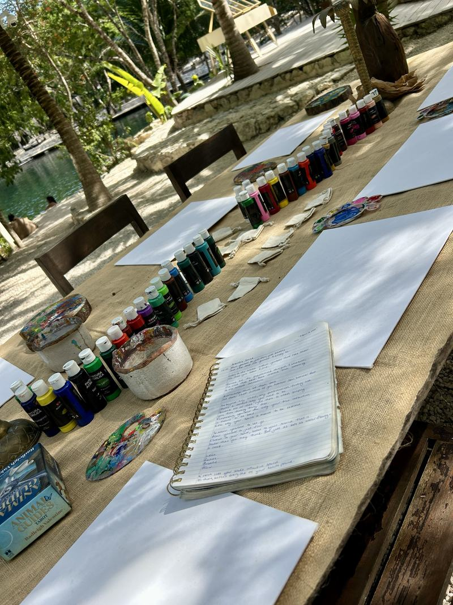
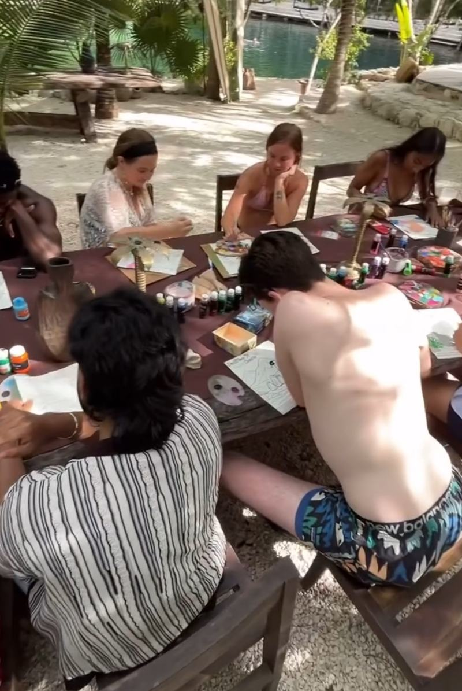
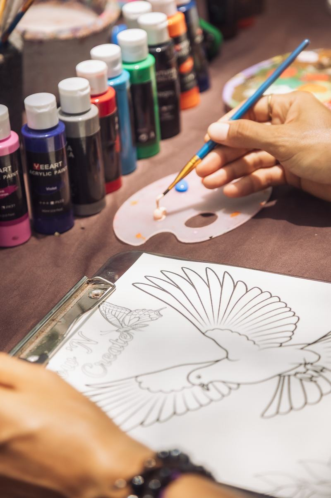
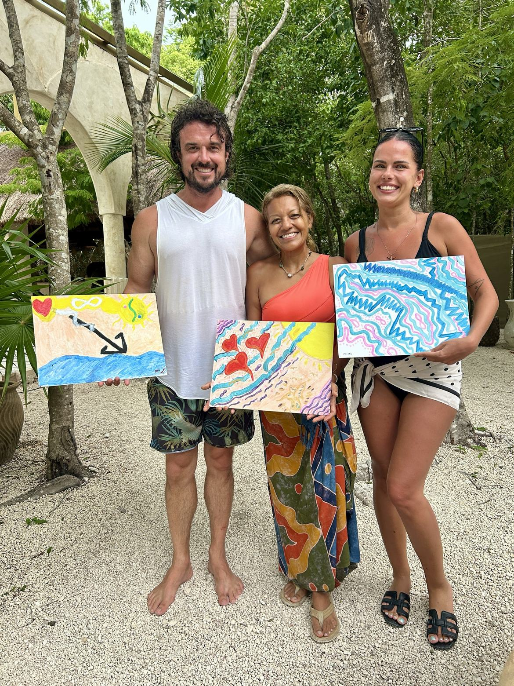

Signature Creative Wellness Experience
Experiencia Creativa de Bienestar
SoulFlow & Create
SoulFlow & Create

You don’t need to call yourself an artist. You only need to sit down at the table.
No necesitas llamarte artista. Solo necesitas sentarte a la mesa.
SoulFlow & Create is an intuitive creative space — not an art class — where painting, poetry, symbolism and presence become pathways back to yourself. Each experience begins with an invitation: sometimes a question, a word, a crystal, an animal symbol; sometimes just an open canvas and the willingness to discover what wants to emerge.
I set the table and hold the space. What happens on the page is yours.
No experience is needed. The focus is expression, not perfection.
SoulFlow & Create es un espacio creativo intuitivo — no una clase de arte — donde la pintura, la poesía, el simbolismo y la presencia se convierten en caminos de regreso a ti misma. Cada experiencia comienza con una invitación: a veces una pregunta, una palabra, un cristal, un símbolo animal; a veces solo un lienzo en blanco y la disposición a descubrir qué quiere emerger.
Yo preparo la mesa y sostengo el espacio. Lo que sucede en la página es tuyo.
No se necesita experiencia. El enfoque está en la expresión, no en la perfección.
The deeper invitation
Soul Remembrance.
Beneath every SoulFlow & Create experience moves a simple current — not steps to force, but an invitation to follow, in paint, in words, in silence.
La invitación más profunda
Recordar el Alma.
Bajo cada experiencia de SoulFlow & Create se mueve una corriente sencilla — no pasos que forzar, sino una invitación a seguir, en pintura, en palabras, en silencio.
-
01
Release
Make space for what you’re ready to loosen, move through, or leave behind.
-
02
Renew
Reconnect with what’s calling for fresh energy, perspective or intention.
-
03
Receive
Make room for what’s emerging — an insight, an image, a new way of seeing.
-
01
Soltar
Haz espacio para lo que estás lista para aflojar, atravesar o dejar atrás.
-
02
Renovar
Reconecta con lo que pide energía, perspectiva o intención renovada.
-
03
Recibir
Haz lugar para lo que está emergiendo — una percepción, una imagen, una nueva forma de ver.
Create
Crear
Explore colour, image, texture, and whatever wants to emerge.
Explora el color, la imagen, la textura y todo lo que quiera emerger.

Connect
Conectar
Share a table, a conversation, a laugh and a creative moment with others.
Comparte una mesa, una conversación, una risa y un momento creativo con otros.

Express
Expresar
Let your own perspective take shape, without needing to make it “right.”
Deja que tu propia perspectiva tome forma, sin necesidad de que sea “correcta.”

Curated to fit your space & audience
Ways it can unfold.
Curado para tu espacio y tu audiencia
Formas en que puede desplegarse.
- Intuitive Painting — free-flow expression guided by colour, sensation & symbol
- Crystal-Guided Creation — a chosen crystal becomes the anchor for the piece
- Symbolic & Intuitive Art — colour, shape & personal symbol; meaning found in the making
- Animal Spirit-Inspired Art — an animal image or message becomes the doorway in
- Creative Reflection — art paired with meditation, journaling or quiet conversation
- Themed Experiences — shaped around a season, element or occasion
- Pintura Intuitiva — expresión libre guiada por el color, la sensación y el símbolo
- Creación Guiada por Cristales — un cristal elegido se convierte en el ancla de la pieza
- Arte Simbólico e Intuitivo — color, forma y símbolo personal; el significado se descubre al crear
- Arte Inspirado en Animales de Poder — una imagen o mensaje animal se convierte en la puerta de entrada
- Reflexión Creativa — arte junto a la meditación, la escritura o la conversación en calma
- Experiencias Temáticas — inspiradas en una estación, un elemento o una ocasión
Signature add-on
Crystal Wrapping Workshop
Guests create a wearable piece, wrapped with intention — a keepsake that leaves the table with them.
Complemento exclusivo
Taller de Envoltura de Cristales
Los invitados crean una pieza para llevar puesta, envuelta con intención — un recuerdo que se lleva consigo.
The experience
An afternoon at the table.
La experiencia
Una tarde en la mesa.
- Arrival & grounding
- Breath & poetic opening
- Intention setting
- Creative expression
- Reflection & closing integration
- Closing
- Llegada y enraizamiento
- Respiración y apertura poética
- Establecer la intención
- Expresión creativa
- Reflexión e integración final
- Cierre


I don’t create the art for you. I create the space where yours can emerge.
Yo no creo el arte por ti. Creo el espacio donde el tuyo puede emerger.
- Emotional release & relaxation
- Meaningful, self-created artwork
- Deeper connection to the present moment
- A unique & memorable experience
- Liberación emocional y relajación
- Una obra propia y significativa
- Conexión más profunda con el presente
- Una experiencia única y memorable


Join a gathering
Pull up a chair.
Reach out and you’ll hear when the next gathering is set. Come as you are: the table, the colours and the open air will be waiting.
Únete a un encuentro
Toma asiento.
Escríbeme y te avisaré cuando se fije el próximo encuentro. Ven como eres: la mesa, los colores y el aire libre te estarán esperando.
Bring it to your space
Host SoulFlow & Create.
Cyndiii Deusa is a sacred artist, intuitive guide and poetic voice who creates spaces for self-connection through creativity and presence — based in Tulum, available for collaborations and destination experiences.
SoulFlow travels. I bring the materials and the expressive container to:
- Gatherings & celebrations
- Retreats
- Events
- Private experiences
- Creative community spaces
Value for your property
- Elevated, distinctive guest offering
- Alignment with wellness & conscious travel
- Increased guest engagement
- Organic, shareable experiences
Setup
Provided: all materials · setup & breakdown · music & facilitation.
Requested: space, tables & seating · optional environmental support depending on setting.
Collaboration options
- Revenue share
- Flat rate
- Guest-paid bookings
- Integration into existing programming
Beyond the table, live poetry readings, spoken-word openings for ceremonies, custom themed workshops and private group experiences can also be woven in — see Speaking & Collaborations.
Tráelo a tu espacio
Alberga SoulFlow & Create.
Cyndiii Deusa es una artista sagrada, guía intuitiva y voz poética que crea espacios para la conexión con uno mismo a través de la creatividad y la presencia — radicada en Tulum, disponible para colaboraciones y experiencias en destino.
SoulFlow viaja. Llevo los materiales y el contenedor expresivo a:
- Encuentros y celebraciones
- Retiros
- Eventos
- Experiencias privadas
- Espacios de comunidad creativa
Valor para tu propiedad
- Una oferta distintiva y elevada para tus huéspedes
- Alineación con el bienestar y el viaje consciente
- Mayor conexión con los huéspedes
- Experiencias orgánicas y compartibles
Logística
Se provee: todos los materiales · montaje y desmontaje · música y facilitación.
Se solicita: espacio, mesas y asientos · apoyo ambiental opcional según el lugar.
Opciones de colaboración
- Reparto de ingresos
- Tarifa fija
- Reservas pagadas por los huéspedes
- Integración a la programación existente
Más allá de la mesa, también se pueden integrar lecturas de poesía en vivo, aperturas de palabra hablada para ceremonias, talleres temáticos personalizados y experiencias privadas de grupo — ve Speaking & Collaborations.